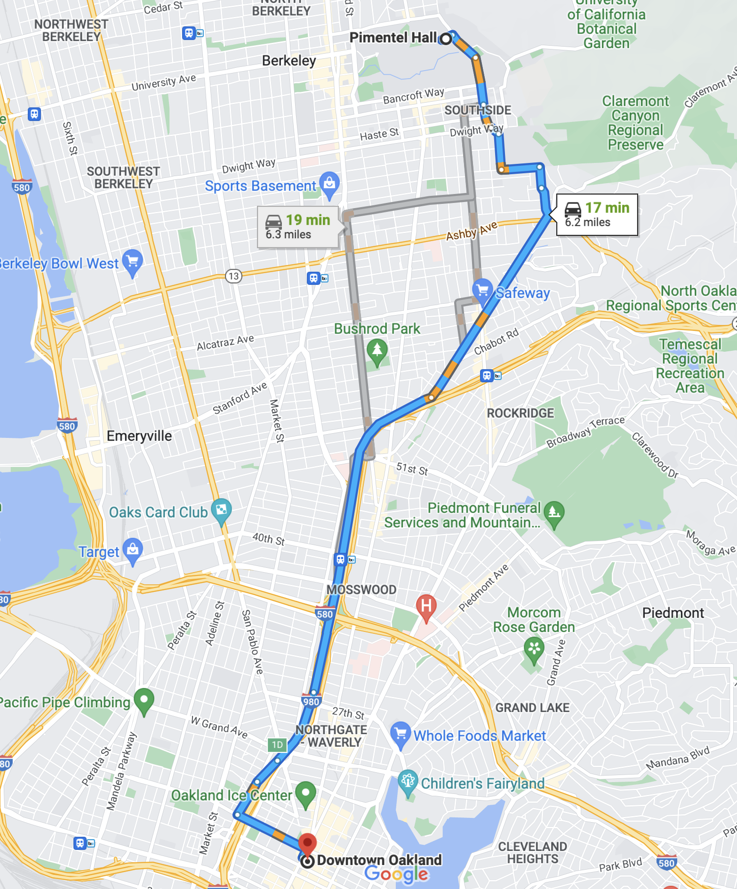

| Student | Cal Grad | Good Job |
|---|---|---|
| Evelyn Fix | yes | yes |
| Evelyn Fix | no | no |
Defining Causality
Conditional counterfactuals and average treatment effects
Welcome to Unit III: Causality
At the beginning of this course, we considered four different claims associated with the following news article1.
- The Consumer Price Index rose 8.3% in April.
- The global consumer price index rose in April.
- The Consumer Price Index rose 8.3% because of the war in Ukraine.
- The Consumer Price Index will likely rise throughout the summer.

Each one of these four claims illustrates a different type of claim made using data. As a brief recap of where we are in this course, let’s take them each in turn.
- The Consumer Price Index rose 8.3% in April.
This is a claim concerning the nature of the data that is on hand, a descriptive claim. While these seem like the most straightforward type of claim, don’t underestimate their utility or the challenges involved in crafting them. Deciding which measure is most appropriate is tricky work and the process of wrangling the data takes careful thought and time.
- The global consumer price index rose in April.
This claim looks deceptively like the first but there is one important difference. The first claim concerns the CPI, which is calculated using data from the US. This second claim is about the broader global population of which the US data is a subset. In other words, this is a generalization from a sample to a population.
For a generalization to be sound, we must take several considerations into account. First off: is the sample representative of the population or is it biased in some way? Secondly: what sources of variability are present? When working with a sample that originated from a chance method, it’s important to consider the degree to which sampling variability might be able to explain the structure you see in the data. Our primary tools in this area are the confidence interval, to assess the uncertainty in a statistic, and the hypothesis test, to assess whether a particular statistic is consistent with an assertion about the state of the population parameters.
- The Consumer Price Index will likely rise throughout the summer.
This is a prediction, a claim that uses the structure of the data at hand to predict the value of observations about which we have only partial information. In midsummer, we know the date will be July 15th, that’s the x-coordinate. But what will the y-coordinate be, the Consumer Price Index? Now we recognize this as a regression problem.
- The Consumer Price Index rose 8.3% because of the war in Ukraine.
This bring us to the final claim, which is one concerning causation. The claim asserts that the structure in the data (the rise in the CPI) can be attributed to specific cause (the war in Ukraine). Causal claims are often the most challenging claims to craft but they are also some of the most useful. Uncovering causes and effects is at the heart of many sciences from Economics to Biomedicine. They also help guide decision making for individuals (is it worth my time to study for the final?) as well as for organizations (will Twitter’s new option to pay for verification result in a net increase in revenue for the company?).
For the remainder of Stat 20, we lay the foundation for causation, first by defining it precisely, then identifying a few of the most powerful strategies for inferring it from data.

Causality Defined
What exactly does it mean to say that “A causes B”?
We speak of causes and effects all the time, even though the language we use varies widely. “I took an aspirin and my headache got better” implies that taking the aspirin is what caused your headache to get better. “She was able to find a good job because she graduated from Berkeley” is more direct: graduating from Berkeley was the cause of her being able to find a good job.
Identifying a causal statement is one thing, but we’re still left the conundrum: what definition can we use to be precise about the meaning of a causal statement?
Let’s see what your intuition tells you about what is a cause and what is not a cause. Which causes do you identify in the following scenario2?
Suppose that a prisoner is about to be executed by a firing squad. A certain chain of events must occur for this to happen. First, the judge orders the execution. The order goes to a captain, who signals the two soldiers of the firing squad (soldier 1 and soldier 2) to fire. They are obedient and expert marksmen, so they only fire on command, and if either one of them shoots, the prisoner dies.
Who caused the death of the prisoner?
A. The judge
B. The captain
C. Soldier 1
D. Soldier 2
As you ponder where to draw the line to determine which of the these four people are the cause of the death of the prisoner, you are working out your own internal definition of causation. Keep your answers on hand; we will discuss this example in class. For now, though, let’s introduce the most widely used definitions of cause and effect.
The Conditional Counterfactual
One of the earliest articulations of what it means to be a cause can be found in the writing of Thucydides, the ancient Greek historian. It comes at the end of a passage where he describes a village called Orobiae, which experienced an earthquake followed by a tsunami.
About the same time that these earthquakes were so common, the sea at Orobiae, in Euboea, retiring from the then line of coast, returned in a huge wave and invaed part o the town, and retreated leaving some of it still under water; so that what was once land is now sea…
The cause, in my opinion of this phenomenon must be sought in the earthquake. At the point where its shock has been the most violent, the sea is driven back, and suddenly recoiling with redoubled force, causes the inundation.
Without the earthquake, I do not see how such an accident could happen.
In the final line, Thucydides makes a leap: he imagines a world where the earthquake didn’t happen, and can’t imagine the tsunami happening. This, for him, is what makes the earthquake the cause of the tsunami. This form of reasoning about causation was summarized centuries later by the Scottish philosopher David Hume, who characterized a cause as a scenario in which “If the first object had not been, the second never had existed.”
Both of these definitions rely upon imagining a world that was different from the one that was observed, a notion in logic called a counterfactual.
- Counterfactual
- Relating to or expressing what has not happened or is not the case.
This notion is the core component of the most widely used definition of a cause, the conditional counterfactual defintion.
- Cause
- We say “A causes B” if, in a world where A didn’t happen, B no longer happens.
Using this definition of causality, let’s revisit two examples from above.
-
Consider the claim, “I took an aspirin and my headache got better”.
Using the conditional counterfactual definition, what would you need to know to determine if the aspirin caused the headache to improve?
Check your answer
You would need to know that if they hadn’t taken an aspirin, that their headache didn’t get better.
-
Consider the claim, “She was able to find a good job because she graduated from Berkeley”.
Using the conditional counterfactual definition, what would you need to know to determine if graduating from Berkeley caused her to find a good job?
Check your answer
You would need to know that if she hadn’t graduated from Berkeley, that she wasn’t able to find a good job.
In both of these examples, reasoning about the meaning of causation requires identifying the counterfactual. The language of counterfactuals can be awkward and that awkwardness points to the primary challenge of identifying a causal claim.
The Challenge of Causation
Counterfactuals have a particularly problematic relationship wth data because data are, by definition, facts. - Judea Pearl
The conditional counterfactual definition of causation is sound in an abstract sense, but it is challenging when you start to think through what sort of data you could collect as evidence of causation. In the second example, we have data on the fact that she found a good job and that she graduated from Berkeley, but the counterfactual - that remains purely hypothetical. In fact, the word counterfactual means counter-to-fact, and “fact” is the meaning of the Latin word “datum” (a single piece of data). That is to say, for airtight evidence of a cause-and-effect, you must observe some data and then something that is somehow also the contrary to what you observed.
In an idealized world, to demonstrate that graduating from Cal was the cause of getting a good job, you would observe this data frame3.
In this idealized data frame, the two rows are both observations of the same person, so they have the same values of every possible variable: work experience, GPA, letters of recommendation, etc. The primary difference is one of them graduated from Cal and the other (from the counterfactual world) did not. Because they differed on their outcome variables (getting a good job), this would serve as rock solid proof that graduating from Cal caused Evelyn to get a good job.
The challenge of using data to make causal clams is that we only ever get to observe one of the two rows above. Said another way, there are two potential outcomes for this scenario. One was observed (the job outcome after going to Cal) and the other was not (the job outcome without going to Cal).
If you’ve ever used a GPS navigation app, you’re already accustomed to thinking in terms of potential outcomes. Here is the guidance Google Maps gives me to travel from Pimentel Hall at Cal to downtown Oakland by car.

Each one of the three paths is a potential route I could take and each of those times are the app’s predictions for what the potential outcomes will be. Importantly, though, these are just predictions, not data. To collect data, I have to select one of these routes to drive, then I could record data on the time it took me. If I choose the blue path and it ends up taking me 16 minutes, I’ll never know for sure that it was my choice of the blue route that led to this apparently short drive time. To know that, I’d have to rewind the clock and, in a different world, decide to take one of the gray routes and observe a drive time that is more than 16 minutes.
While our definition of causation prevents us from ever making completely airtight conclusions about cause and effect in scenarios like these, over the years scientists and statisticians have crafted many clever strategies for working around these constraints to build compelling causal claims.
From individual-level claims to group-level claims
Our inability to observe both counterfactuals makes it hard to make reliable claims about causal effects for an individual. However, it can sometimes be easier to make a claim about the typical causal effect among a group of individuals. The distinction between individual and group level causation is demonstrated in following two statements.
- Evelyn got a good job because she graduated from Cal.
- Graduating from Cal helps people get a good job.
The first is a strong statement about a single individual, Evelyn. The second is a much more general statement that compares people who have have graduated from Cal with a counterfactual group who has not.
Group-level causation is the focus of many sciences, which aim to make general claims about the causal mechanisms of the world. The goal is to estimate the average treatment effect.
- Average Treatment Effect
- A population parameter that captures the effect of being administered a particular treatment, averaged over each group. Most often estimated by a difference in sample means or a difference in sample proportions.
In statement two above, a natural estimate for the average treatment effect would be the difference between the proportion of Cal graduates who got a good job and the proportion of non-Cal graduates who got a good job. That can be visualized in a simple example of three students who graduated from Cal and three who did not. The difference in the proportion with a good job is \(2/3 - 1/3 = 1/3\).
| Name | Cal Grad | Good Job |
|---|---|---|
| Evelyn | TRUE | TRUE |
| Grace | TRUE | FALSE |
| Juan | TRUE | TRUE |
| Alex | FALSE | FALSE |
| Monica | FALSE | FALSE |
| Sriya | FALSE | TRUE |
| Cal Grad | P(Good Job) |
|---|---|
| TRUE | 0.67 |
| FALSE | 0.33 |
It is easier to come up with plausible-seeming estimates of average treatment effects than individual treatment effects because we see subjects under both treatment and control conditions. But to decide if estimates like the one we’ve just given are reliable we need to think about how the data for the two groups was generated and whether they serve as good approximations to each other’s counterfactuals. This question will be the focus of the rest of the causality unit.
Summary
We set the stage for reasoning about causation by defining cause and effect in terms of a conditional counterfactual. We say “A causes B” if, in a world where A didn’t happen, B no longer happens. This definition is problematic because we can’t simultaneously observe the same subjects under A and not-A. However, there is more hope to say something meaningful about average treatment treatment effects, which can also be defined using counterfactuals.
In the remainder of the causality unit, we will discuss strategies for estimating average treatment effects using carefully-designed comparisons that leverage knowledge about how the data was produced.

Footnotes
Smialek, Jeanna (2022, May 11). Consumer Prices are Still Climbing Rapidly. The New York Times. https://www.nytimes.com/2022/05/11/business/economy/april-2022-cpi.html↩︎
This example appears in The Book of Why (2018) by Pearl and Mackenzie, as do subsequent historical quotations from Thucydides and Hume.↩︎
An a historical aside, Evelyn Fix is the name of a past professor of statistics at UC Berkeley and the co-inventor of the k-nearest neighbors algorithm.↩︎
A drawing from “The Book of Why” depicting the notion of potential outcomes described in Robert Frost’s poem The Road Not Taken.↩︎